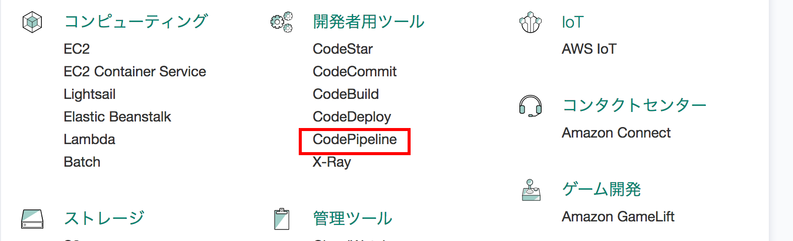
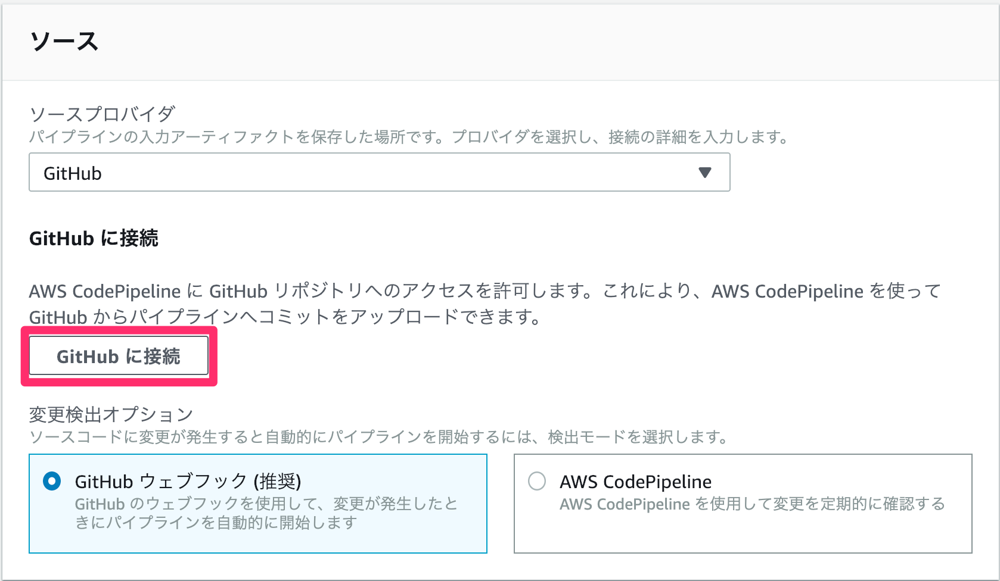
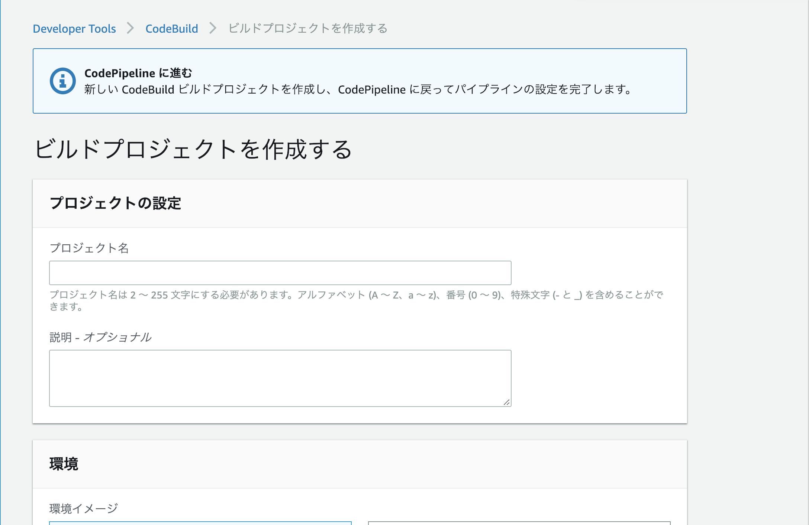
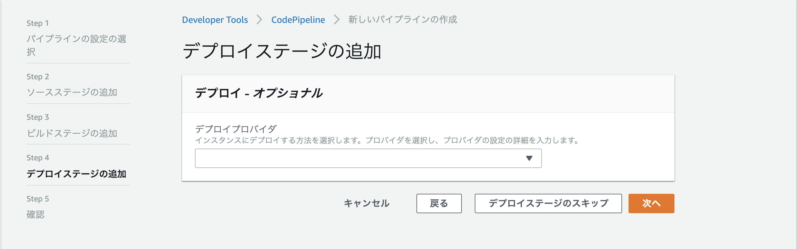

CodePipelineによるパイプラインの構築および自動デプロイの実行

CodeDeployの設定が済んだところで、CodePipeline/CodeBuild/CodeDeployを使用したパイプラインを作成していきます。
今回作成するパイプラインは以下図の左側の部分です。

パイプラインの作成開始まで
マネジメントコンソールのトップ画面より「CodePipeline」をクリックします。

すると、以下のような画面が表示されます。

「パイプラインの作成」をクリックします。
「パイプラインの設定の選択」画面
「パイプラインの設定の選択」画面に遷移します。

以下の表のように入力します。
| 入力項目 | 値 |
|---|---|
| パイプライン名 | hands-on-pipeline |
| サービスロール | 既存のサービスロール |
| サービスロール名 | hands-on-environment-CodePipeline-ServiceRole |
| アーティファクトストア | デフォルトの場所 |
入力が終わったら、「次へ」をクリックします。
「ソースステージの追加」画面
「ソースステージの追加」画面に遷移します。

ビルドプロバイダとして、GitHubを選択すると表示されるGitHubというボタンをクリックします。

初めてCodePipelineでGitHubを使用する設定を行う場合、ボタンをクリックすると、以下の画像のような画面が表示されます。Authorize aws-codesuiteボタンを押してください。

GitHubとの接続が完了したら以下の表のように入力します。
| 入力項目 | 値 |
|---|---|
| ソースプロバイダ | GitHub |
| リポジトリ | フォークしておいたリポジトリ |
| ブランチ | master |
| 変更検出オプション | GitHubウェブフック（推奨） |
入力が終わったら、「次へ」をクリックします。
「ビルドステージの追加」画面
「ビルドステージの追加」画面に遷移します。

ビルドプロバイダとして、AWS CodeBuildを選択すると表示されるCreate Projectというボタンをクリックします。

CodeBuildのプロジェクト作成ウィンドウ
CodeBuildのプロジェクト作成画面が新しいウィンドウで開きます。

CodeBuildのプロジェクトを作成していきます。
プロジェクトの設定
| 入力項目 | 値 |
|---|---|
| プロジェクト名 | hands-on-project |
環境
| 入力項目 | 値 |
|---|---|
| 環境イメージ | マネージド型イメージ |
| オペレーティングシステム | Ubuntu |
| ランタイム | Node.js |
| ランタイムバージョン | aws/codebuild/nodejs:10.14.1 |
| イメージのバージョン | このランタイムバージョンには常に最新のイメージを使用してください |
| 特権付与 | ✔ |
| サービスロール | 既存のサービスロール |
| ロール名 | hands-on-environment-CodeBuild-ServiceRole |
| AWS CodeBuildにこのサービスロールの編集を許可し | (チェックを外す） |
Buildspec
| 入力項目 | 値 |
|---|---|
| ビルド仕様 | buildspecファイルを使用する |
| BuildSpec名 | (空欄のまま） |
入力が済んだら「CodePipelineに進む」ボタンをクリックします。
CodePipeline作成画面に戻った後
CodePipelineの画面に戻ったら、以下のように入力されていることを確認し、「次へ」をクリックします。
| 入力項目 | 値 |
|---|---|
| ビルドプロバイダ | AWS CodeBuild |
| プロジェクト名 | hands-on-project |
「デプロイステージの追加」画面
「デプロイステージの追加」画面に遷移します。

以下の表のように入力します。
| 入力項目 | 値 |
|---|---|
| デプロイプロバイダ | AWS CodeDeploy |
| アプリケーション名 | hands-on-app |
| デプロイグループ名 | hands-on-deploy-group |
入力が終わったら、「次へ」をクリックします。
最後に確認画面が表示されるので、内容を確認後、「パイプラインの作成」をクリックします。
「次へ」をクリックします。
確認画面
最後に確認画面が表示されます。

表示された設定内容を確認後、「パイプラインの作成」をクリックします。